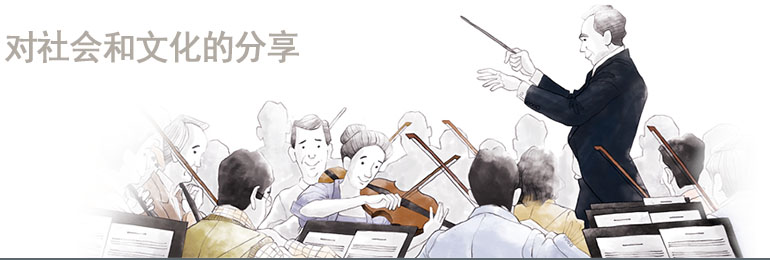
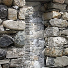
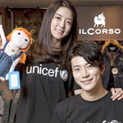
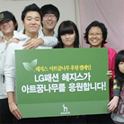
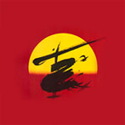

社会贡献
超越文化/艺术/环境的界 限的更大的分享的实践LF所定义的分享囊括着对人，对社
会和文化，乃至对自然的广泛的爱。我们承诺今后会持续开展各种
公益活动。


- 在世界上最美丽的车站
- Lafuma设立在尼泊尔喜马拉雅海拔3,000m地区的 Jomsom上，与 MBC、KOICA一起以“世界上最美的广播电台”为口号建立了广播电台。
与外部联系的道路只有一条，印度朝拜圣地Muktinath，几乎每天都停电，环境恶劣，但是在这样的环境下，喜马拉雅Jomsom居民们最需要的正是“信息”。
Lafuma的“世界上最美的广播电台”不仅是Jomsom居民们的如同绿洲般的信息Hub，也将用作安娜普纳登山客的山灾救护广播。

- Love Festival
- 在LF和乐天百货店的共同企划下，从2009年开始在乐天百货店的7个店面开展有LF的12个重要品牌参与的LOVE FESTIVAL，把活动期间销售收益的1~2%用于援助“派送防疟疾蚊帐(Stop Malaria!, 2009年)”“非洲助学计划(Schools for Africa, 2010年)”、“非洲之角(Horn of Africa, 2011年)”等联合国儿童基金会开展的各种活动。
- 宠物领养活动
- HAZZYS饰品积极参与了引发社会热点的流浪狗的领养和保护。
2012年10月与杂志CeCi合作开设了爱犬咖啡屋形式的画廊，
并且将获得捐赠的演员赵允熙与领养或临时照看的爱犬拍摄的画报和由3位插图作家的才能
捐赠组成的6幅宠物插图进行了展示。

- 艺术梦之树援助活动
- HAZZYS开展了作为伦敦艺术项目的环节之一的援助具有艺术才华的儿童的2011年新锐作家征集作品展。
在与Facebook公开赛同时进行的此次活动中在Facebook上每征集1个“赞”即可积存1000韩元，从而向艺术梦之树传达才能援助物品。
最终共征集了5581个爱心，向包括首尔芦原区的拥抱蓝天地区儿童中心在内的5个团体分发颜料和珍珠粘土等美术用品和笛子、吉他等乐器。
- MAESTRO & Friends 项目
- MAESTRO从2005年8月开始3年间作为国内企业首次正式援助音乐界的世界巨匠——音乐大师郑明勋的粉丝俱乐部‘MAESTRO&Friends’。
通过MAESTRO&Friends援助，不仅帮助了指挥家郑明勋的音乐活动，而且有助于推进开发和普及针对普通人和青少年的教育项目，帮助弱势群体和保护环境等各种社会活动。

- 伦敦交响乐团来韩演出
- DAKS绅士装对2006年举办的伦敦交响乐团来韩演出进行了援助。

- 音乐剧‘Miss Saigon’
- HAZZYS为2006年音乐剧‘Miss Saigon’的韩国首演提供了援助。